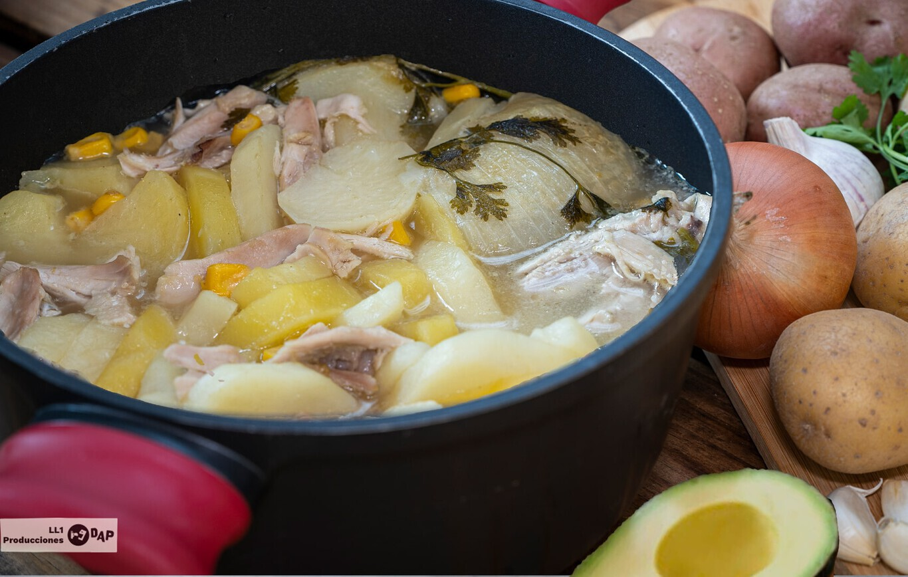

Ajiaco Colombiano

Ingredientes
Para 6 personas
- 400 g patata criollas (o monalisa)
- 250 g patata pastusas (o kennebec)
- 2 g cebolleta
- 0.5 pollo
- 1 ramita de cilantro fresco
- 1 manojo de guascas (hierbas)
- 3 dientes de ajo triturados
- caldo de pollo
- 300 g maíz cocido en granos
- 1 aguazarte cortado en láminas
- 1 puñado de alcaparras
- 1 taza de crema de leche
- sal y pimienta negra molida
Preparación
- Pelamos y cortamos en rodajas de un dedo de grosor las patatas.
- Cortamos las cebolletas por la mitad.
- Introducimos en la cazuela las patatas, las cebolleta, el pollo salpimentado, los ajos, el cilantro y cubrimos con el caldo de pollo.
- Dejamos cocinar a ebullición mínima, tapado durante 45 minutos.
- Sacar el pollo deshilacharlo y volver a ponerlos junto con el maíz y las guascas dejando cocinar 10 minutos más destapado.
- Cuando esté listo, acompañamos el ajiaco de aguacates pelados y laminados, alcaparras enteras y crema de leche a gusto del comensal.